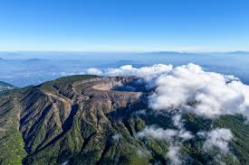
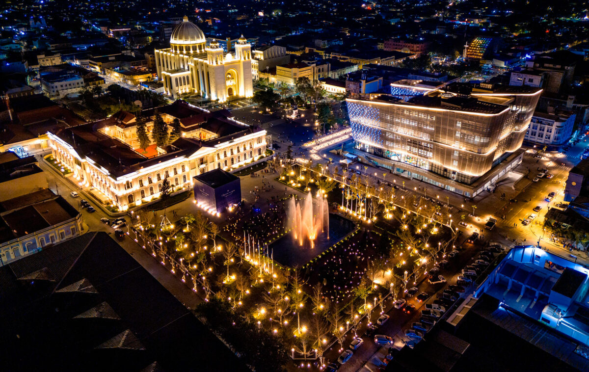
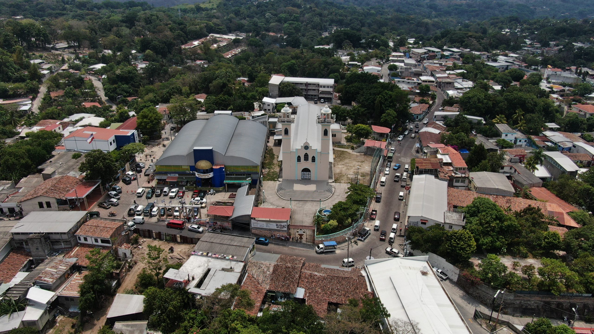
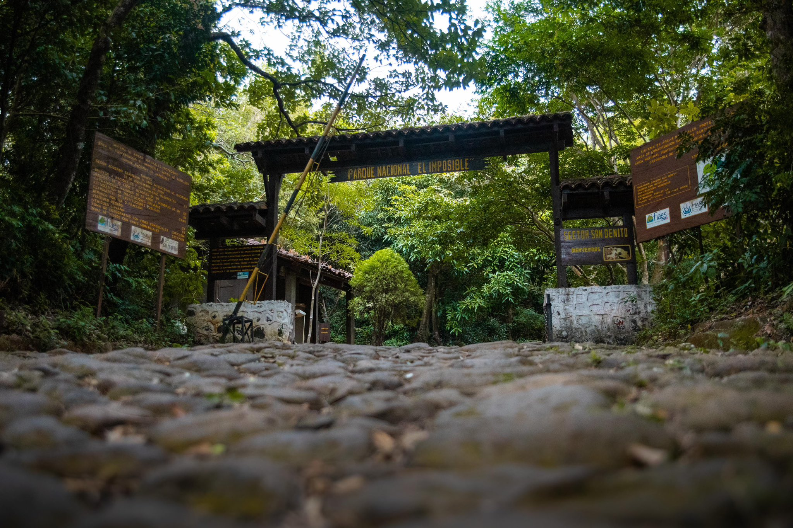
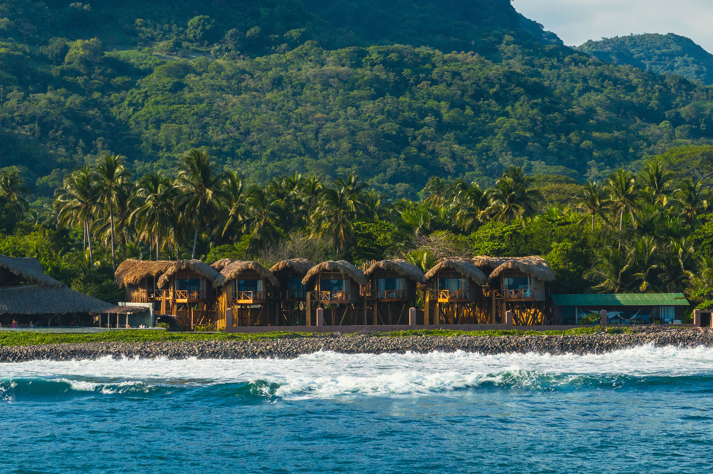

Lugares Para Visitar

Volcán de Santa Ana
El volcán más alto del país con una laguna verde hermosa
Senderismo
Fotografía
Observación volcánica
Naturaleza

Playa El Tunco
La playa más famosa para hacer surf y disfrutar
Surf
Playa
Vida nocturna
Buceo
Playas

Joya de Cerén
Ruinas antiguas muy importantes de nuestros antepasados
Tours guiados
Historia
Cultura maya
Cultura

Ruta de las Flores
Pueblos bonitos con flores y artesanías
Artesanías
Café
Paseo en carro
Arte local
Aventura

Lago de Coatepeque
Un lago muy bonito para nadar y relajarse
Natación
Lancha
Pesca
Relajación
Naturaleza

Centro de San Salvador
El corazón de la capital con muchos lugares históricos
Catedral
Teatro Nacional
Restaurantes
Compras
Cultura

Olocuilta
Famoso por sus deliciosas pupusas y ambiente tradicional salvadoreño
Pupusas de arroz
Gastronomía local
Ferias y festivales
Artesanías
Gastronomía

Parque Nacional El Imposible
El parque más grande con muchos animales y plantas
Observación de aves
Caminatas
Naturaleza
Fotografía
Naturaleza

Playa El Zonte
La playa del Bitcoin con olas perfectas para surf
Surf avanzado
Bitcoin
Atardeceres
Hospedaje
Playas
🌋 Volcán de Santa Ana
📌 Desde San Salvador
- Distancia: 65 km
- Tiempo: 1 hora 15 minutos
🚵 Atracciones en el lugar
- - Laguna verde esmeralda en el cráter del volcán
- - Vistas panorámicas del Lago de Coatepeque
- - Observación del Volcán Izalco
- - Senderos naturales en Cerro Verde
- - Miradores con vistas de tres volcanes
- - Flora y fauna del bosque nebuloso
- - Fotografía de paisajes volcánicos
🚗 Transporte particular
- Ruta: Carretera Panamericana (CA-1) hacia Santa Ana
- Parqueo: Disponible en el Parque Nacional ($3 USD)
- Estado de carretera: Buen estado
🚌 Transporte público
- Ruta 205: Terminal de Occidente → Santa Ana.
- Luego Bus 248 desde la Estación La Vencedora en Santa Ana hacia Cerro Verde
- Costo: $1.50 - $2.00 USD total
- Frecuencia: Cada 30 minutos
📍 Ubicación en el mapa
🏖️ Playa El Tunco
📌 Desde San Salvador
- Distancia: 40-45 km
- Tiempo: 45 minutos a 1 hora
🚵 Atracciones en el lugar
- - Surf para todos los niveles (olas consistentes)
- - La famosa roca "El Tunco" (formación de piedra)
- - Escuelas de surf y alquiler de tablas
- - Piscinas naturales entre rocas
- - Vida nocturna y bares frente al mar
- - Restaurantes con mariscos frescos
- - Sunset watching (atardeceres espectaculares)
- - Yoga en la playa
- - Caminatas a playas cercanas (El Sunzal, El Zonte)
🚗 Transporte particular
- Ruta: Carretera del Litoral (CA-2) hacia el oeste
- Dirección: Hacia La Libertad, km 42, desvío señalizado
- Parqueo: $2-3 USD por día cerca de la playa
🚌 Transporte público
- Opción 1: Ruta 102, 102-A (recomendada)
- Salida: Cerca del Cementerio Los Ilustres, San Salvador
- Destino: Playa El Sunzal (El Tunco está en el camino)
- Costo: $0.80 USD bus ordinario / $1.50 USD microbus
- Frecuencia: Cada 15-20 minutos
- Horario: 5:00 AM - 7:00 PM
- Opción 2: Rutas 107 o 177
- Costo: $1.50 USD
- Tiempo: 1 hora aproximadamente
- Desde La Libertad a El Tunco: Bus 80 (corre entre Sunzal y La Libertad)
- Costo: $0.25 USD
- Frecuencia: Cada 15-20 minutos
- Horario: 4:30 AM - 5:30 PM
📍 Ubicación en el mapa
🏔️ Joya de Cerén
📌 Desde San Salvador
- Distancia: 36 km al noroeste
- Tiempo: 30-40 minutos
🚵 Atracciones en el lugar
- - Estructuras mayas preservadas (casas, cocinas, bodegas)
- - Objetos cotidianos de hace 1,400 años
- - Museo del sitio con artefactos
- - Estructuras ceremoniales y viviendas
- - Baño de vapor (temazcal) prehispánico
- - Campos de cultivo antiguos preservados
- - Centro de interpretación educativo
- - "La Pompeya de América" (pueblo sepultado por ceniza volcánica)
🚗 Transporte particular
- Ruta: Carretera Panamericana (CA-1) Oeste hacia San Juan Opico
- Ubicación: Km 32 de la Panamericana
- Parqueo: Gratuito en el sitio arqueológico
🚌 Transporte público
- Opción 1: Ruta 108
- Desde: San Salvador
- Destino: San Juan Opico
- Bajada: Desvío Joya de Cerén (km 32)
- Caminata: 500 metros desde la carretera
- Costo: $0.45 USD
- Frecuencia: Cada 20 minutos
- Opción 2: Rutas 201 o 202
- Desde: Terminal de Occidente
- Destino: Santa Ana o Ahuachapán
- Bajada: Km 32, Joya de Cerén
- Costo: $1.50 USD
- Opción 3: Ruta 101B
- Dirección hacia La Libertad
- Bajada: Parada Sitio Arqueológico Joya de Cerén
📍 Ubicación en el mapa
🌺 Ruta de las Flores
📌 Desde San Salvador
- Distancia: 80-90 km (varía según pueblo)
- Tiempo: 1 hora 30 minutos - 2 horas
🚵 Atracciones en el lugar
- Nahuizalco:
- Mercado nocturno artesanal (jueves a sábado)
- Artesanías de mimbre y madera
- Muebles coloniales hechos a mano
- Iglesia colonial del siglo XIX
- Talleres artesanales tradicionales
- Salcoatitán:
- Mirador turístico con vistas panorámicas
- Iglesia colonial pintoresca
- Vivero de orquídeas
- Cafeterías con vista al valle
- Juayúa:
- Festival Gastronómico (fines de semana)
- Cascadas Los Chorros de la Calera
- Iglesia Cristo Negro (colonial)
- Tours de café en fincas
- Canopy y tirolesa
- Excursiones a cascadas cercanas
- Arte callejero y murales
- Apaneca:
- Laguna Verde (crater volcánico)
- Laguna de las Ninfas
- Tours por plantaciones de café
- Mirador de la Cruz
- Clima fresco de montaña
- Cabalgatas
- Viveros de plantas ornamentales
- Concepción de Ataco:
- Murales coloridos en todo el pueblo
- Galerías de arte y artesanías
- Talleres de artistas locales
- Tiendas de souvenirs únicos
- Restaurantes con cocina de autor
- Mirador turístico El Calvario
- Iglesia colonial pintoresca
- Jardines Florales
🚗 Transporte particular
- Ruta: Carretera Panamericana (CA-1) hacia Sonsonate
- Dirección: San Salvador → Santa Tecla → Sonsonate
- Tiempo entre pueblos: 10-15 minutos
🚌 Transporte público
- Primera etapa: Ruta 205
- Desde: Terminal de Occidente
- Destino: Sonsonate
- Costo: $1.25 USD
- Frecuencia: Cada 15 minutos
- Segunda etapa: Rutas locales 249 o 53
- Desde: Sonsonate
- Destino: Pueblos de la Ruta
- Costo: $0.50 - $1.00 USD por tramo
- Conexiones entre pueblos cada 20-30 minutos
📍 Ubicación en el mapa
⛵ Lago de Coatepeque
📌 Desde San Salvador
- Distancia: 56 km
- Tiempo: 1 hora
🚵 Atracciones en el lugar
- - Paseos en lancha por el lago volcánico
- - Deportes acuáticos (kayak, paddle board, jet ski)
- - Restaurantes flotantes con vista panorámica
- - Miradores panorámicos del lago
- - Hoteles boutique con vista al agua
- - Pesca deportiva
- - Isla Teopán (pequeña isla en el centro)
- - Clubes náuticos y marinas
- - Fotografía de atardeceres espectaculares
- - Relajación en restaurantes a orilla del lago
- - Aguas termales naturales en algunas áreas
🚗 Transporte particular
- Ruta: Carretera Panamericana (CA-1) hacia Santa Ana
- Dirección: Desvío hacia El Congo, luego señalización al lago
- Parqueo: Disponible en restaurantes y miradores (algunos gratuitos)
🚌 Transporte público
- Ruta 205 o 201: San Salvador → Santa Ana
- Desde Santa Ana: Bus local hacia El Congo
- Costo total: $1.50 - $2.00 USD
- Frecuencia: Cada 30 minutos
📍 Ubicación en el mapa
⛪ Centro de San Salvador
🚵 Atracciones en el lugar
- - Plaza Gerardo Barrios (plaza central histórica)
- - Catedral Metropolitana (arquitectura neoclásica)
- - Teatro Nacional de San Salvador (edificio histórico)
- - Palacio Nacional (tours disponibles)
- - Mercado Central (artesanías y comida local)
- - Iglesia El Rosario (arquitectura modernista única)
- - Biblioteca Nacional
- - Parque Libertad
- - Museos del centro histórico
- - Mercado Ex-Cuartel (gastronomía y artesanías)
- - Plaza Morazán
- - Monumentos históricos y estatuas
- - Arquitectura colonial y republicana
- - Tiendas tradicionales y comercios locales
🅿️ Parqueo
- Parqueos privados: $1 - $3 USD por hora
- Zonas comerciales con parqueo propio
🚌 Transporte público dentro de la ciudad
- Ruta 205 o 201: San Salvador → Santa Ana
- Desde Santa Ana: Bus local hacia El Congo
- Costo total: $1.50 - $2.00 USD
- Frecuencia: Cada 30 minutos
📍 Ubicación en el mapa
🫔 Olocuilta
📌 Desde San Salvador:
- Distancia: 18 km al este
- Tiempo: 25-30 minutos
🚵 Atracciones en el lugar
- - Mercado de Pupusas (famoso a nivel nacional)
- - Docenas de pupuserías tradicionales
- - Gastronomía salvadoreña auténtica
- - Iglesia colonial del pueblo
- - Plaza central pintoresca
- - Tiendas de dulces artesanales
- - Semitas (pan dulce tradicional)
- - Quesadilla salvadoreña (postre de arroz)
- - Ambiente familiar tradicional
- - Paradas de comida típica salvadoreña
🚗 Transporte particular
- Ruta: Carretera Panamericana (CA-1) Este
- Dirección: Hacia el Aeropuerto Internacional
- Señalización: Salida claramente marcada
- Parqueo: Disponible en restaurantes (gratuito con consumo)
🚌 Transporte público
- Rutas hacia oriente desde Terminal de Oriente
- Múltiples rutas pasan por Olocuilta (118, 133, etc.)
- Costo: $0.35 - $0.50 USD
- Frecuencia: Cada 10-15 minutos
- Horario: 5:00 AM - 8:00 PM
📍 Ubicación en el mapa
🏞️ Parque Nacional el Imposible
📌 Desde San Salvador:
- Distancia: 98 km (hacia occidente)
- Tiempo: 2 horas 30 minutos - 3 horas
🚵 Atracciones en el lugar
- - Senderos de senderismo (varios niveles de dificultad)
- - Cascadas naturales espectaculares
- - Observación de aves (más de 400 especies)
- - Flora y fauna única del bosque tropical
- - Miradores panorámicos de montaña
- - Ríos y quebradas cristalinas
- - Fotografía de naturaleza
- - Bosque primario preservado
- - Puentes colgantes sobre ríos
- - Piscinas naturales
- - Biodiversidad excepcional (árboles gigantes centenarios)
- - Mamíferos silvestres (ocasionalmente visibles)
- - Camping en áreas designadas
🚗 Transporte particular
- Ruta: CA-1 Oeste → Sonsonate → CA-12 hacia Cara Sucia
- Dirección: Carretera hacia la costa, zona de Ahuachapán
- Estado: Carretera en buen estado hasta entrada del parque
- Última parte: Camino de tierra (4x4 recomendado)
🚌 Transporte público
- Primera etapa: Ruta 205 o 259
- Desde: Terminal de Occidente
- Destino: Sonsonate
- Costo: $1.50 USD
- Segunda etapa: Bus hacia Cara Sucia o San Francisco Menéndez
- Desde: Sonsonate
- Bajada: Entrada al parque (preguntar al conductor)
- Costo: $1.00 - $1.50 USD
📍 Ubicación en el mapa
🏄♂️ Playa El Zonte
📌 Desde San Salvador:
- Distancia: 48 km
- Tiempo: 1 hora
🚵 Atracciones en el lugar
- - Surf de clase mundial (olas constantes)
- - Bitcoin Beach (pionero en adopción de Bitcoin)
- - Escuela de surf Hope House
- - Clases de surf para principiantes
- - Ambiente bohemio y relajado
- - Restaurantes frente al mar
- - Hostales y hoteles boutique
- - Atardeceres espectaculares
- - Piscinas naturales entre rocas
- - Yoga y meditación en la playa
- - Gastronomía local y internacional
- - Cafeterías con café de altura
- - Actividades acuáticas (paddle board, kayak)
- - Comunidad artística local
- - Murales y arte callejero
🚗 Transporte particular
- Ruta: Carretera del Litoral (CA-2) hacia el oeste
- Dirección: Pasando La Libertad, continuar hacia el oeste
- Entrada: Claramente señalizada en la carretera
- Parqueo: $2-3 USD en la playa
🚌 Transporte público
- Ruta 192 o 102: Terminal de Occidente → La Libertad
- Desde La Libertad: Bus hacia El Zonte
- Buses locales que van hacia el occidente
- Costo: $0.75 - $1.00 USD desde San Salvador
- Frecuencia: Cada 20-30 minutos
- Horario: 5:00 AM - 6:30 PM